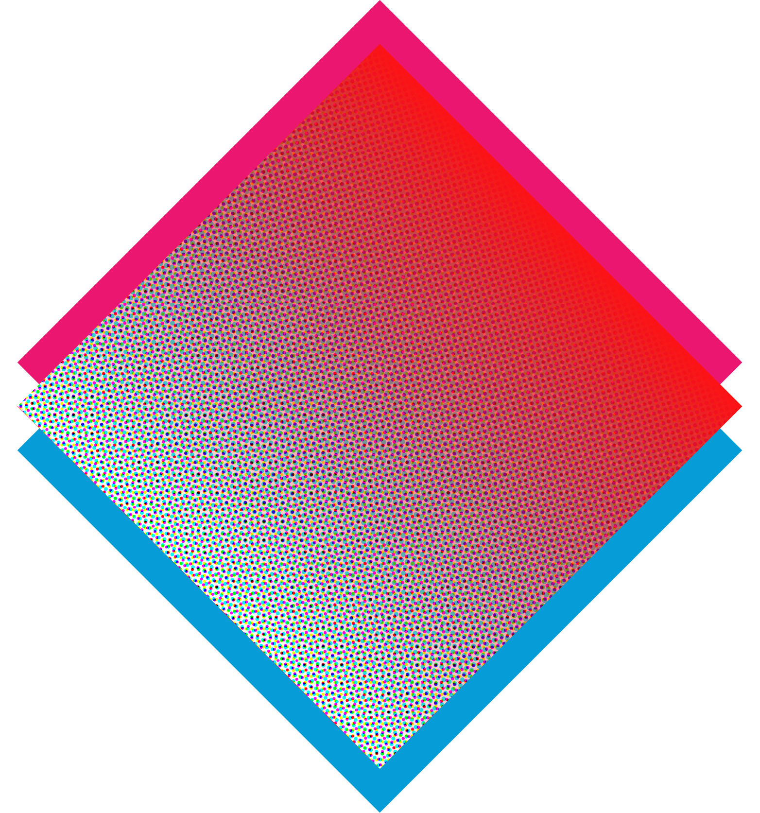
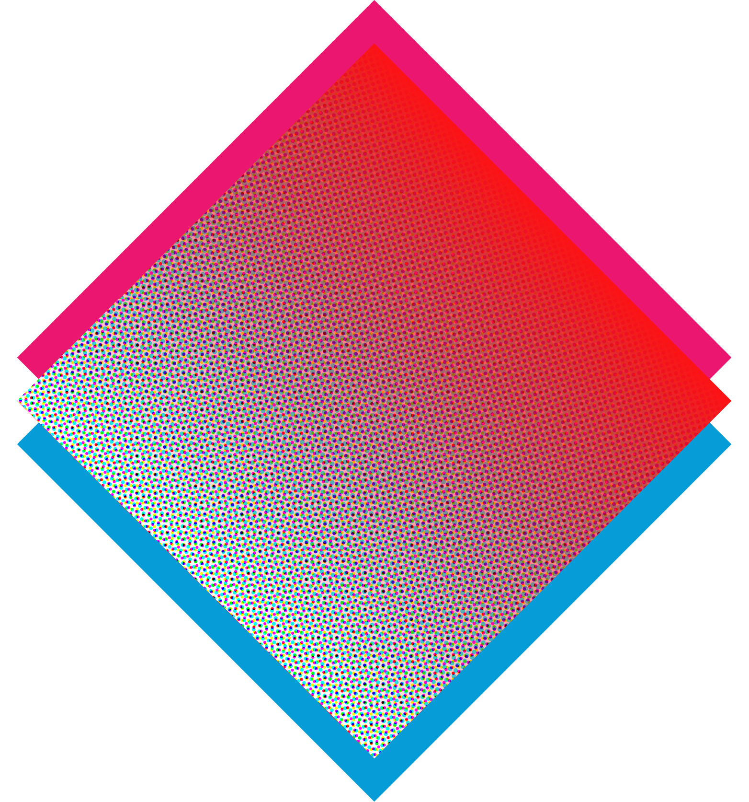
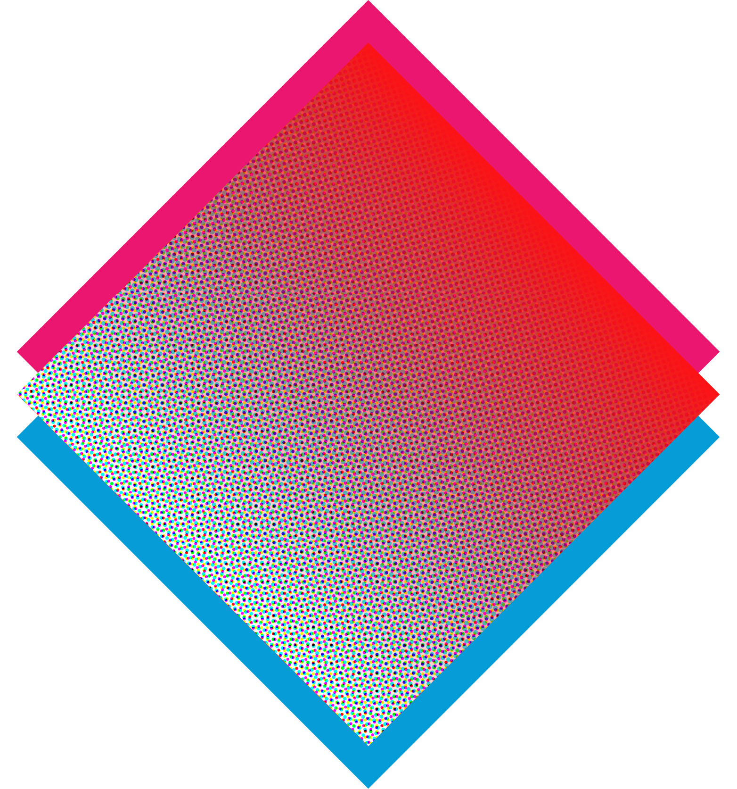
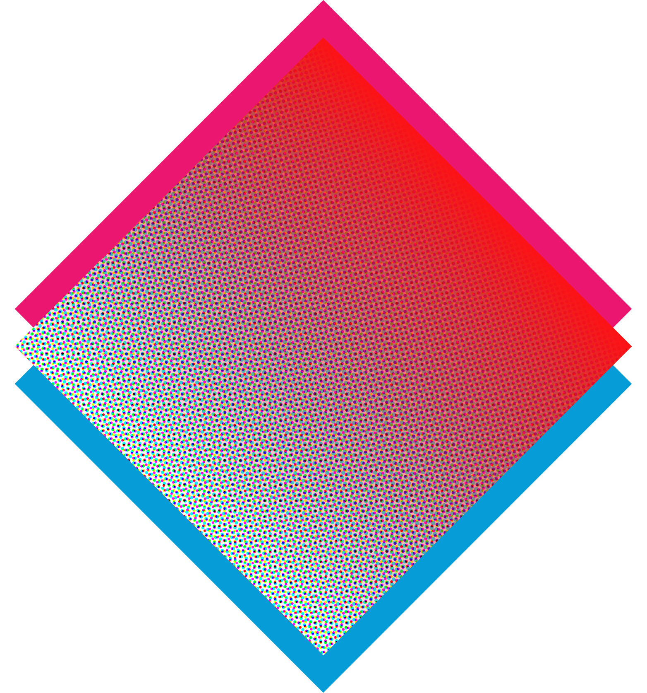

The latter part of the 20th century saw a dramatic shift in the art world, particularly in New York City. The avant-garde art scene was thriving, with artists like Andy Warhol, Jean-Michel Basquiat, and Keith Haring leading the way. These artists, who would become known as some of the most influential figures of the post-modern era, were pushing the boundaries of what was considered art, and exploring new and innovative ways to express their ideas and perspectives. Their works were bold, graphic, and often politically charged, reflecting the cultural and social upheaval of the time.

In the decades since, art has continued to evolve and expand, exploring new mediums and techniques and embracing new technologies. One of the biggest challenges facing artists today is sustainability. With the planet facing unprecedented environmental and social challenges, artists are being called upon to use their voices and their art to help raise awareness and drive change.
Andy Warhol was one of the most influential artists of the 20th century, often referred to as the “Pope of Pop Art.” He was born in Pittsburgh in 1928 and began his artistic career as a commercial illustrator before moving to New York in the 1950s. Warhol is best known for his colorful, bold and often controversial depictions of American popular culture, such as Campbell’s soup cans, Marilyn Monroe, and Elvis Presley. He also experimented with film, music and performance art, and was a key figure in the 1960s art scene in New York.

Jean-Michel Basquiat was a rising star in the New York art world of the 1980s. Born in Brooklyn in 1960, he was a self-taught artist who began his career as a graffiti writer and later gained recognition for his distinctive style, combining elements of primitive, abstract, and figural art. Basquiat's works are marked by a raw energy, social commentary, and a critique of power, race, and class. He quickly gained international recognition and was sought after by leading galleries and collectors. Sadly, Basquiat died at the young age of 27, but his legacy lives on as one of the most important and influential artists of his generation.

Keith Haring was a visionary artist and activist who rose to prominence in the 1980s. Born in Pennsylvania in 1958, he was inspired by the New York street art scene and began creating his own works using chalk on black paper in subway stations. Haring's bold, simple, and graphic style quickly caught the attention of the art world, and he went on to create large-scale public murals, exhibitions, and commercial products. He was also deeply committed to social activism, using his art to address issues of war, AIDS, and other political and social issues. His impact on contemporary art continues to be felt today, and he is remembered as a cultural icon of the 20th century.

SustainArt—Exploring the Nexus of Post-Modernism, Sustainability & A.I. is a groundbreaking new installation that brings together the influences of these incredibly innovative and thought-provoking artists, regarded as the leaders of the post-modern art era. The show will explore the significance of sustainability in the world today and how important it is for our planet's future and the survival of generations to come, through the artistic language of post-modern artists Warhol, Basquiat, and Haring, and implementing some of the most advanced technology of today as an extension of the artist's creativity.

Hi, I'm JON. I'm a graphic designer & artist and have been pracing various forms of graphic art and visual communication for a couple years shy of a decade. I received my BFA from the Milwaukee Institute of Art & Design (MIAD) in the spring of 2021 and have continued my practice on my own since then, doing freelance work from time to time.
From 2018–2019, I worked on a startup business as a team lead twice to develop a SAAS product called Hivemind before continuing the project on my own in 2021. Unfortunately, the product didn't get enough support or funding and so remains on the back-burner for another time, but I'm always on the lookout for new business and entrepreneurial opportunities wherever I can find them.
I consider myself to be a designer before an artist, as that's the kind of work I get paid to do as a freelancer, but I certainly have a body of artwork to my name as well. As an artist, my typical media include digital graphics and light-painting-photography, but I've been painting more in recent months, both digitally and with acryllics. I've also been working a lot with web, UI & UX design, like this website for example, all hand coded by myself.
I hope you enjoy the show, and feel free to check out my other work on my website as well.
So now that you understand my background as an artist and what I'm doing with this project, enjoy the show! Scan the QR codes around the room to go deeper, learn more about my art, these great artists of influence and the big picture sustainability issues that the show is intended to bring awareness to, and share with your friends!